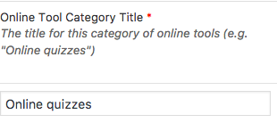
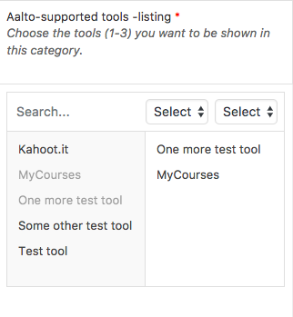
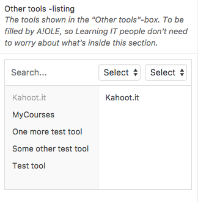

Description
The guide to online learning describes online learning tools and what they are used for.
What is Aalto Learning IT?
This section explains what Aalto Learning IT is. A title and a description, no more, no less.
Online tool categories
In this part, you can create new Online Tool Categories, under which you can then add new Online Learning Tools. It's fairly simple.
Add the title here:

Add the description here:

And select the Aalto-supported tools here:

And the other tools here:

Click the  button if you want to add a new Online tool category.
button if you want to add a new Online tool category.